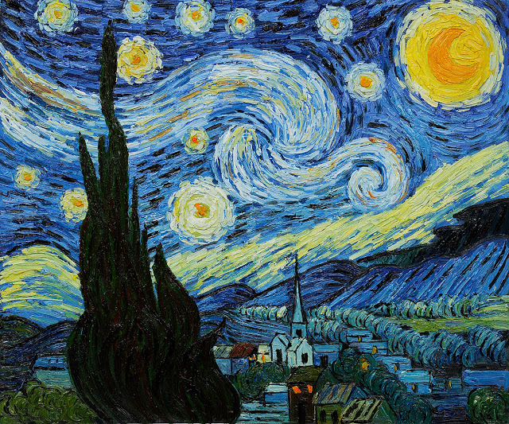

Expresionismo
Noche Estrellada - Vicent Van Gogh (Junio, 1889)
El expresionismo es un movimiento cultural que surgió en Alemania en la primera década del siglo XX, que abarcó multitud de campos como la pintura, danza, fotografía, música…
Trata la renovación del arte basada en la búsqueda subjetiva de lo esencial, atendiendo únicamente al sentimiento vital sin someterse a ninguna regla.
Caracteristicas
- Uso del color de forma excesiva, aportando un carácter simbólico.
- Las formas naturales se convierten en trazos y geometrías casi irreconocibles.
- Cobra importancia el mundo de los sueños.
- Solo importa representar el sentimiento y no la realidad.
- El pesimismo y el caos son la temática principal de las obras.
Exponentes
| Nombre | Pais | Año | Pintura |
|---|---|---|---|
| Edvard Munch | Noruega | 1863-1944 | El Grito(1893) |
| Vasili Kandinsky | Rusia | 1866-1944 | Puerto de Odessa(1898) |
| Ernst Ludwig Kirchner | Alemania | 1880-1938 | Cuatro Mujeres en la Calle(1913) |